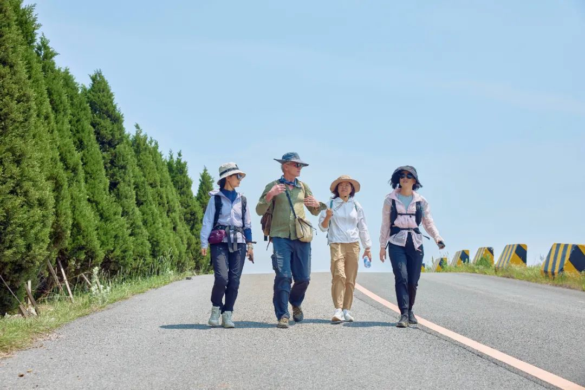

On May 28, we met Paul Salopek at a hotel in Dalian’s Jinshitan—where his China walk had paused before his visa expired, and where he now resumed the journey. Breakfast talk drifted from coastal weather to Georgia’s unrest, as if global fracture were the most natural small talk. A two-time Pulitzer Prize winner, Salopek is undertaking a long-form “slow journalism” experiment: the Out of Eden Walk, tracing ancient human migration routes on foot—and using encounters, not headlines, to read the world.

This feature follows Paul Salopek’s Out of Eden Walk at a small but telling hinge: the final 70 kilometers before he left China by sea. The story stays on the ground—coastline detours, industrial edges, small refusals at hotel front desks—and uses those frictions to ask bigger questions: what happens to “openness” when borders harden; what kind of global understanding is still possible; and why the most durable reporting unit may be a simple encounter.
Entering the walk — a “city walk” with a mischievous route
Before joining the walk, I had no real idea what the route would be. From what I’d read, Salopek’s walk sounded like wild backcountry travel—sometimes even requiring camping gear. After checking, our coordinator told me this stretch was in the city, with hotels along the way—lightweight, easy. Paul laughed: “This part you joined is basically a city walk—but I’ll try to design some wilder routes for you.”
Blocked route — “always power versus reality”
We were stunned. We’d already walked for an hour or two to cross that hill—turning back could add unknown kilometers. After rounds of pleading, the guards relented: we couldn’t use the road, but we could cut through the construction site—they wouldn’t interfere. Then the construction workers stopped us: no passers-by allowed. After more argument, we finally followed a tire-tracked path through the site. At the end there was no road—only a metal fence. Beyond it stood the city. We climbed over quickly, and saw the patrol car waiting outside, likely watching whether we really got out. I told Paul the whole exchange. He nodded immediately: “It’s always power versus reality.”
Closed doors — fear that cannot explain itself
The innkeeper’s groundless coldness crushed Panpan. She told Paul; he simply said, “It’s okay—we’ll take a taxi.” In the cab, Panpan felt a sharp sense of failure—not only because she couldn’t find him a place to stay, but because she saw how indifferent her compatriots could be. Paul comforted her: he’d seen this many times. Kindness often becomes powerless in front of fear of the unknown. The most frightening thing, he said, is that people often don’t even know why they are saying “no.”
Milestone — three questions as a method
Ever since his first steps in Africa, every 100 miles Paul stops: he takes a panorama—sky and ground—records video and ambient sound, and finds the first person he meets at that spot to ask three questions: “Who are you? Where do you come from? Where are you going?”
The goodbye — cars arriving, cars leaving
As the day neared its end, Huang Yu said goodbye; then Frank’s wife and son; then another companion, Wang Yan, rushed to the airport. Paul stood by the roadside watching their cars leave: “Today cars came and went, taking away three waves of my friends. I really began to feel sad.” That day, while recording ambient sound for the Milestone, Paul heard an elderly choir singing an old 1980s song, “Camel Bell”: “My dear brothers / When spring brings good news / We shall meet again.” It felt like the best ending to this walk with Paul. ■